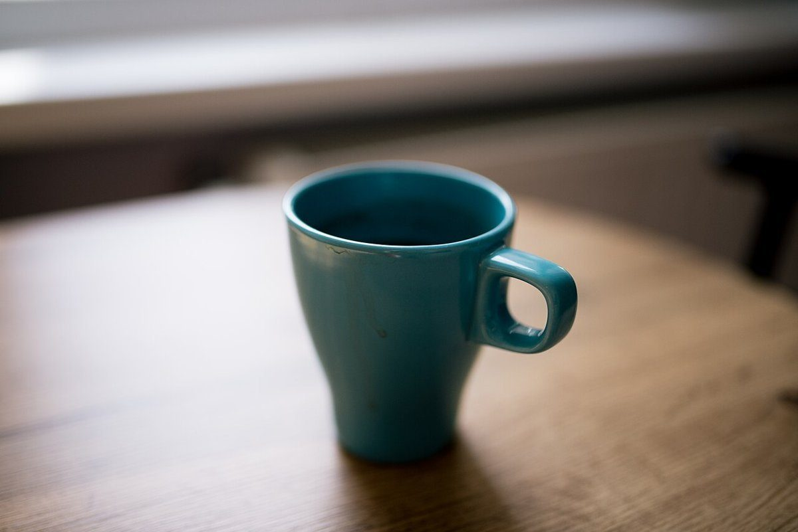

スキップコーヒー
カフェ / 沖縄県豊見城市

沖縄県豊見城市にあるカフェ「スキップコーヒー」のご案内ページです。営業時間やメニューなど詳しいことは準備中。電話とInstagramで確認できます。
制作側の連想
「スキップ」から、ひとつ飛ばしの数え方
店名の由来は分かりません。制作側は「スキップ」という言葉から、1、3、5、7、9と、ひとつ飛ばしで数える数え方を連想しました。そこでこのサイトは、ページの番号を奇数だけにしています。飛ばした偶数の番号は、目次に「とばしました」と置いてあります。お店の理念・由来とは無関係の、制作側の連想です。
写真(イメージ)
ひとつ飛ばしの棚
写真は豊見城市やお店のものではなく、国外または撮影地不明のフリー素材です。お店で提供しているものを示すものでもありません。


ご案内
お店のこと(確認できたものだけ)
| 所在地 | 〒901-0241 沖縄県豊見城市豊見城１３ |
|---|---|
| 電話 | 090-6638-1976 |
| 営業時間 | 準備中 |
| 定休日 | 準備中 |
| ご予約 | 準備中 |
| 駐車場 | 準備中 |
| SNS | Instagram @skipcoffee2024 |